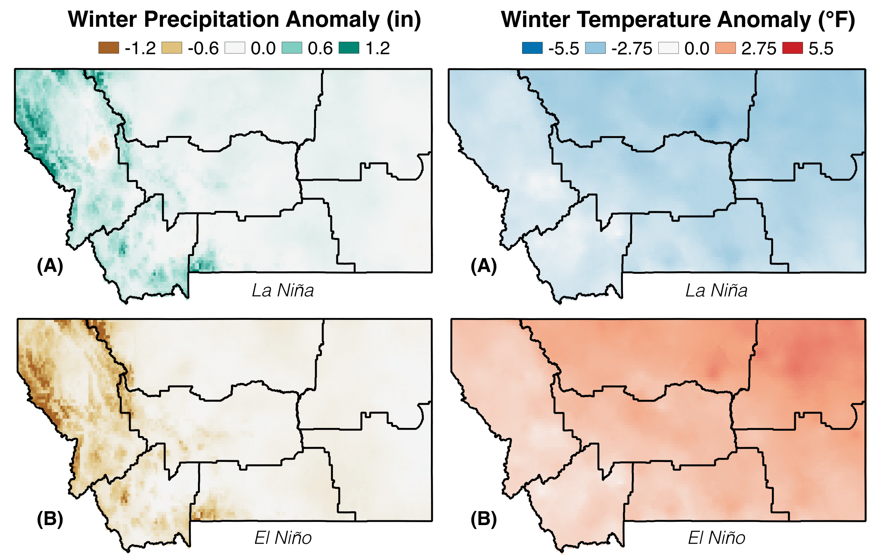

4 Draft Teleconnections
When we think of weather, we generally think about what is happening around us at that moment. However, the Earth’s atmosphere, oceans, and landmasses make up a continuous system, and what we experience as weather—and also in expanded time frames as climate—is actually a small part of much larger patterns of atmospheric circulation that determine movements of air, moisture, and energy across the planet. Atmospheric circulation takes on recurring patterns that link the weather and climate across distant parts of the globe. Scientists call these recurring or persistent patterns, teleconnections. Teleconnections thus are climate oscillations that link across vast geographical areas and can last for weeks to decades.
In the past, scientists identified teleconnections by observing patterns in historical climate and weather data, and then investigating the underlying processes driving those patterns. As global climate changes, the nature of these connections is changing, as well. We can no longer rely only on historical observations to understand future teleconnections. Thus, predicting climate-related changes in teleconnections and the impact of those changes on local weather and climate are important areas of ongoing research.
Scientists recognize many teleconnections. We describe two of the most important teleconnections for Montana below, the El Niño-Southern Oscillation and the Pacific Decadal Oscillation. It is important to bear in mind that teleconnections are happening continually, and superimposed on each other as well as upon other long-term climate patterns. As such, teleconnections may mask the trend of a longer-term climate signal or enhance the signal making it appear stronger than it is. Additionally, teleconnections can be helpful in identifying likely seasonal and annual weather patterns and, in some cases, longer-term climate trends.
4.1 El Niño-Southern Oscillation
The El Niño-Southern Oscillation cycle refers to a fluctuation between unusually warm (El Niño) and cold (La Niña) waters in the tropical Pacific, with associated changes in atmospheric circulation (the Southern Oscillation) (Figure fig-elnino). El Niño and La Niña events typically develop over 2-7 yr. During El Niño events, western North America experiences greater flows of maritime air and reduced flows of cold polar air from Canada. Generally drier and warmer conditions result in the northwestern US (NWSa undated). In Montana, El Niño winters receive roughly 70-90% of normal precipitation, and both winter and summer are warmer than average (Figure fig-elnino and Figure fig-elnino-anomaly) (NWSb undated; Higgins et al. 2007). The effects of La Niña events are generally opposite those of El Niño. The northwestern US, including Montana, experiences increased precipitation and cooler temperatures, while the southern states are drier and warmer during La Niña events.


4.2 Pacific Decadal Oscillation
The Pacific Decadal Oscillation is a pattern of ocean-atmospheric climate variability across the mid-latitude Pacific Ocean. The oscillation varies in time from interannual to inter-decadal, with the strongest cycle typically occurring about every 30 yr. Effects of the Pacific Decadal Oscillation are not as intense as the El Niño-Southern Oscillation cycle (Mantua and Hare 2002). During its warm phase, winter temperatures are warmer throughout Alaska, western Canada, and the western US (by an average of 2°F), and precipitation is decreased (Figure fig-pdo-anomaly). Effects during the cool phase reverse, with cooler winter temperatures and increased precipitation experienced over western North America.
The Pacific Decadal Oscillation and El Niño-Southern Oscillation teleconnections may reinforce or moderate each other, depending on if their phases are in alignment or opposition.